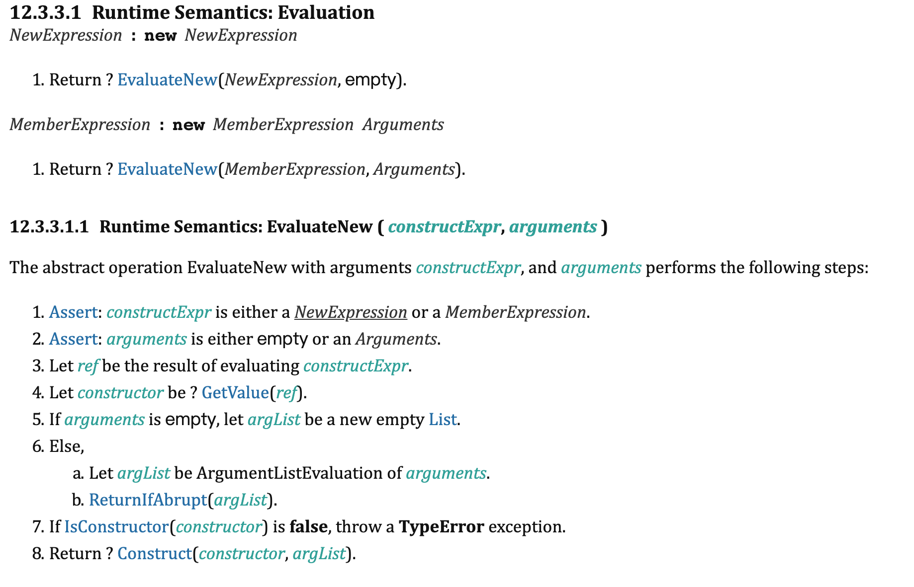
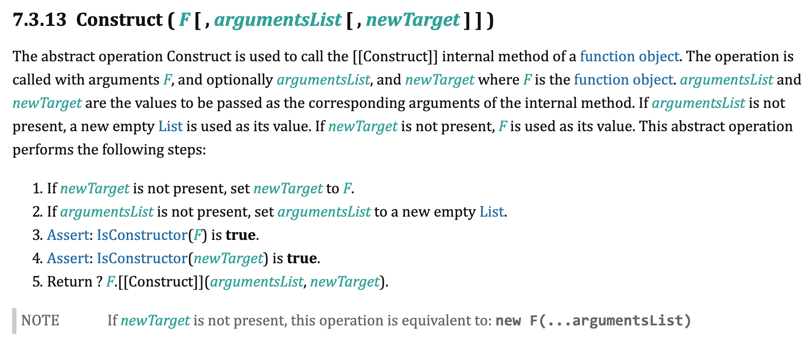
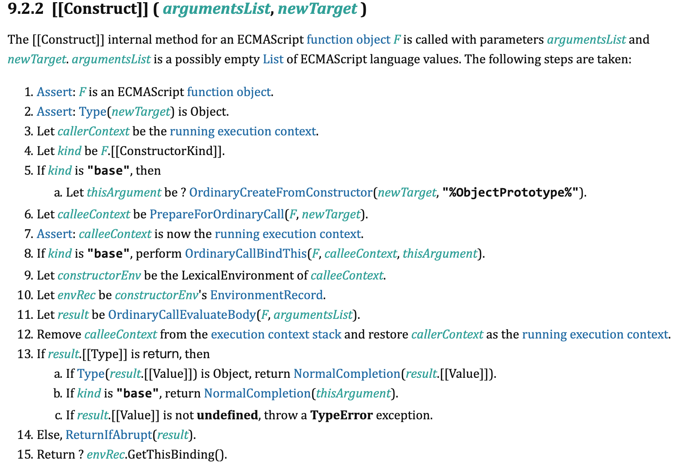
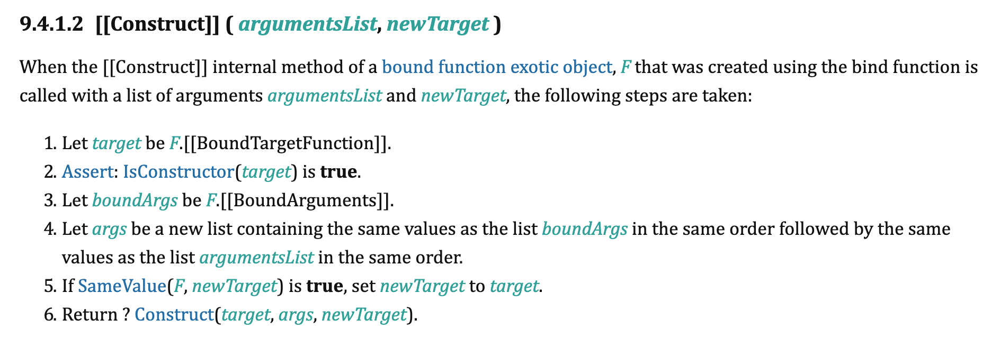

new 的执行过程是非常常见的一个问题，《JavaScript高级程序设计》中也讲了这个问题。现在有个问题：new一个bind之后的函数，结果是怎样的？本文尝试从规范的角度来解答这个问题
new 表达式
《JavaScript高级程序设计》中的说明
- 创建一个新对象
- 将构造函数的作用域赋给新对象（因此this就指向了这个新对象）
- 执行构造函数中的代码（为这个新对象添加属性）
- 返回新对象
看看规范中是怎么讲的

可以看到最终是执行了Construct

然后又去执行了Function对象的内置[[Construct]]方法

简单翻译下[[Construct]]函数的执行过程
- 如果ConstructorKind记录为kind为base，那么this值为以 F.prototype || “%ObjectPrototype%”为原型创建的一个空对象，记为thisArg
- 创建新的函数执行上下文3，并且推入执行上下文堆栈，成为当前执行上下文
- 如果kind是base，给当前的执行上下文中环境记录项envRec中的this值设置为thisArg
- 执行函数体，结果为result（如果函数体中有this.x类似这样的赋值，那就能把值赋值到thisArg中了）
- 如果函数有return，并且返回的是object，那么直接返回函数体执行的结果
- 如果函数有return，返回的不是object，但是kind是base， 那么直接返回之前创建的thisArg
- 如果函数有return，返回的不是object也不是undefined，但是kind不是base，那么就抛出异常（kind一共只有两种值，正常函数是kind，使用了class继承预发的是derived，也就是说在使用了class继承的类的构造函数中，如果有return语句，必须return object，否则会报错）
- 如果函数没有return，那就看函数的执行结果类型如果是 break continue throw，一般都会报错
- 函数没有return，执行结果是正常的，那么就返回之前执行上线文中的环境记录项envRec的this值，其实就是thisArg
规范是不是很繁琐？因为它必须严谨，必须使用规范中的文法来描述整个执行过程，其实和高级程序设计中描述的基本一致，除了没有说明es6新增的class继承语法的边界问题。如果是考虑普通函数的话，用代码标识如下：1
2
3
4
5function newFn(constructor){
const obj = Object.create(constructor.prototype)
const result = constructor.apply(obj, arguments.slice(1))
return (typeof result === 'object' && result != null) ? result : obj;
}
super(arguments)
上面提到[[Construct]]在执行的时候，会判断[[ConstructorKind]]这个属性。而这个属性的定义在9.2ECMAScript Function Objects。其中规定了只有两种值，分别是kind和derived。全局搜索就能发现在普通函数定义时，会把[[ConstructorKind]]设置为base，在使用了extends实现继承的class定义时，会被设置为derived。 所以上面的执行过程中，如果是derived有两个特殊情况：
- 不会默认用当前函数的原型去创建一个对象作为this绑定在当前执行上下文
- [[Construct]]函数要么不返回，要么返回对象或者undefined，其余值都会报错
这也就是为何要规定，如果声明了constructor函数就必须显示的调用super来设置当前执行环境中环境记录项的this值。在ECMAScript2016规范理解（6）-super中有说明super(arguments)的执行过程。其最终也是调用了Construct(func, argList, newTarget)。并且把result设置为当前含有this的环境记录项中的的this值（有点绕）。这就有问题了，调用super时，也就是调用父类的构造函数，父类的构造函数中往往有this.x等这样的赋值操作，为何this.x最终是赋值到了子类的对象上，而不是父类构造出来的对象呢？用如下示例代码来解释：1
2
3
4
5
6
7
8class A {}
class B extends A {
constructor() {
super()
}
}
var a = new A()
var b = new B()
- 注意：
- 在调用Construct时的 newTarget 参数是通过 GetNewTarget()获得的，而GetNewTarget是获取GetThisEnvironment 的 [[NewTarget]] ，根据Function Environment Records的说明，当环境记录项是由[[Construct]]执行时创建的，那么[[NewTarget]] 就是正在执行的[[Construct]]函数的newTarget参数。也就是说，上面示例代码中的 b函数本身。
- 所以最终去执行通过super找到父类的构造函数，然后去执行父类构造函数a的内置[[Construct]] 方法时，newTarge是子类函数b。所以创建出来的thisArg是子类函数b为原型创建的空对象，这就解释了为何通过super调用父类的构造函数创建出来的对象，其原型反而是子类的prototype
当new操作符对应的是bind后的函数时
在规范中，bind之后的那个函数，是被定义为Bound Function Exotic Objects。其Construct方法和前文说的不一样。并且它还有三个内置属性[[BoundTargetFunction]] [[BoundThis]] [[BoundArguments]]，其实从名字基本能猜出其意思，正是由于[[BoundThis]]的存在，bind之后的函数，使用call，apply都是没法改变其执行是的this值的，接下来我们看看规范中是怎么描述[[Construct]]方法的
1
2
3
4
5
6
7
8
9var fun = funa.bind(this);
new fun()
// 执行流程
// -> new constructor();
// -> Construct(constructor, argList)
// -> constructor.[[Construct]](argumentsList, newTarget)
// -> Construct(BoundTargetFunction, argList)
// -> BoundTargetFunction.[[Construct]](argumentsList, BoundTargetFunction)
// -> 普通函数的构造方法流程
- 注意
- 执行new表达式的时候，执行这句Construct(constructor, argList)，是没有带第三个参数newTarget的。Construct内部会把newTarget的值设置为F，然后再去调用 F.[Construct]，F是参数constructor
- 在Bound Function 的[[Construct]]中，执行的Construct(target, args, newTarget)，其实target为bind前的源函数[[BoundTargetFunction]]，newTarget由于和F是相等的，所以newTarge也为[[BoundTargetFunction]]。
- 所有最终，Bound Function 的[[Construct]]，又去调用了[[BoundTargetFunction]]的内置属性，区别是args是合并了[[BoundArguments]]和new时传入的参数
验证
1 | var obj = {} |
最终打印出来的是 1 2